Species photos come from Wikimedia Commons
and are used under the licence each one carries. Generated by
tools/fetch-photos.py — edit that, not this file.
| Species | Author | Licence | Source | |
|---|---|---|---|---|
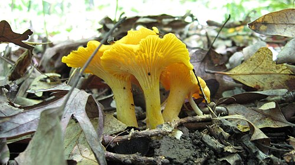 | cantharellus_flavus | Matthew Foltz | CC BY-SA 4.0 | file page |
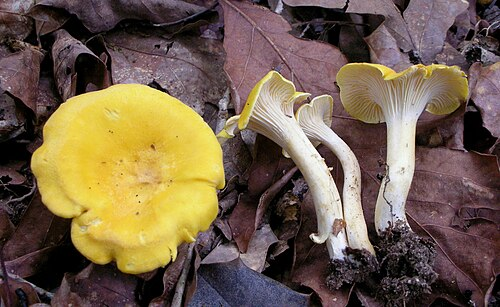 | cantharellus_tenuithrix | This image was created by user Ron Pastorino (Ronpast) at Mushroom Observer , a source for mycological images. You can contact this user here . | CC BY-SA 3.0 | file page |
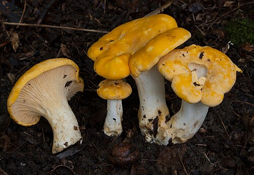 | cantharellus_phasmatis | AJ (j7u) | CC BY-SA 3.0 | file page |
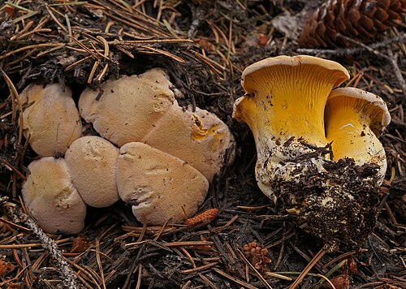 | cantharellus_roseocanus | This image was created by user Sava Krstic (sava) at Mushroom Observer , a source for mycological images. You can contact this user here . | CC BY-SA 3.0 | file page |
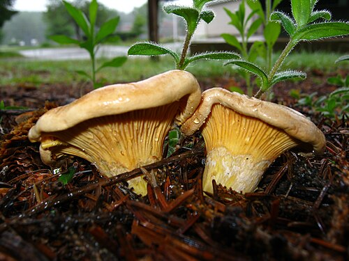 | cantharellus_enelensis | This image was created by user Erlon (Herbert Baker) at Mushroom Observer , a source for mycological images. You can contact this user here . | CC BY-SA 3.0 | file page |
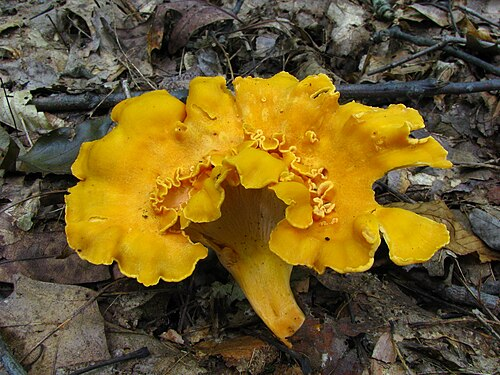 | cantharellus_lateritius | Dan Molter | CC BY-SA 3.0 | file page |
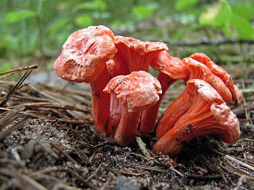 | cantharellus_cinnabarinus | Eric Smith (esmith) | CC BY-SA 3.0 | file page |
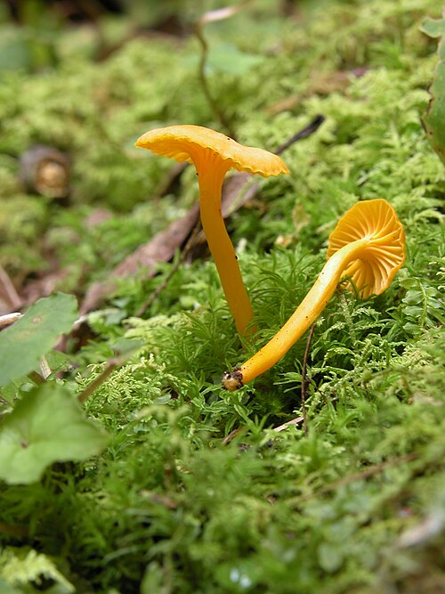 | cantharellus_minor | This image was created by user Nathan Wilson (nathan) at Mushroom Observer , a source for mycological images. You can contact this user here . | CC BY-SA 3.0 | file page |
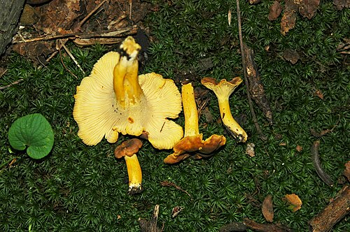 | cantharellus_appalachiensis | This image was created by user Hamilton at Mushroom Observer , a source for mycological images. You can contact this user here . | CC BY-SA 3.0 | file page |
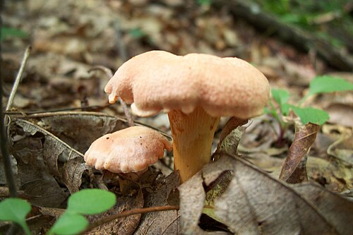 | cantharellus_persicinus | This image was created by user Eddee (ravenhawkdr) at Mushroom Observer , a source for mycological images. You can contact this user here . | CC BY-SA 3.0 | file page |
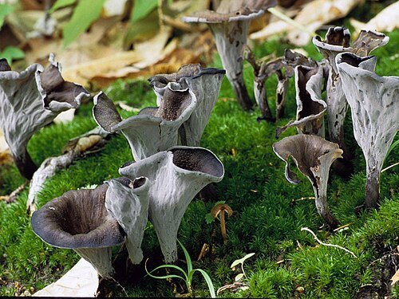 | craterellus_fallax | Jsunseri85 | CC BY-SA 4.0 | file page |
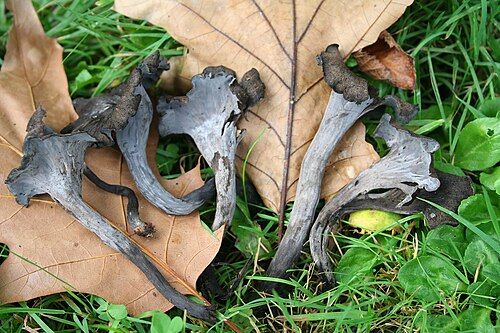 | craterellus_cornucopioides | Jean-Pol GRANDMONT | CC BY 3.0 | file page |
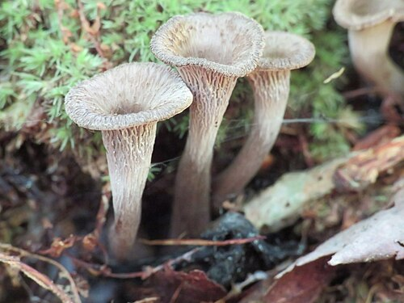 | craterellus_foetidus | Deana Thomas | CC BY-SA 4.0 | file page |
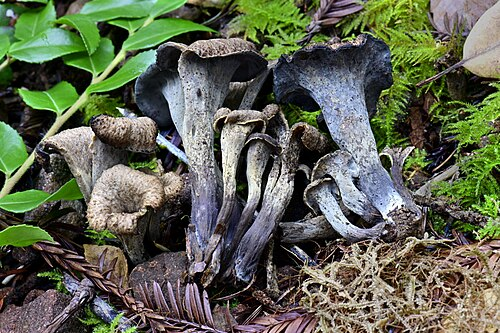 | craterellus_calicornucopioides | This image was created by user Alan Rockefeller (Alan Rockefeller) at Mushroom Observer , a source for mycological images. You can contact this user here . | CC BY-SA 3.0 | file page |
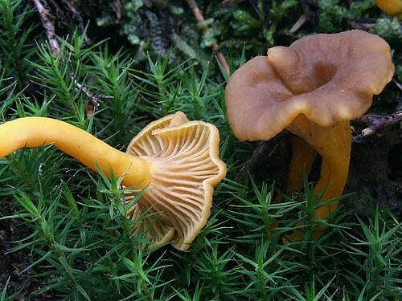 | craterellus_tubaeformis | Jerzy Opioła | CC BY-SA 4.0 | file page |
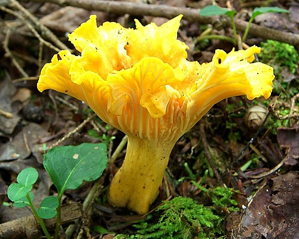 | craterellus_ignicolor | Jason Hollinger | CC BY 2.0 | file page |
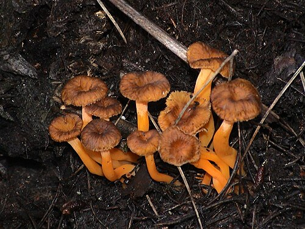 | craterellus_lutescens | Pau Cabot | CC BY-SA 3.0 | file page |
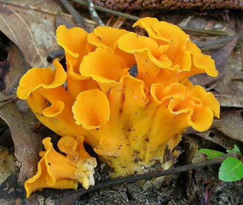 | craterellus_odoratus | This image was created by user Ron Pastorino (Ronpast) at Mushroom Observer , a source for mycological images. You can contact this user here . | CC BY-SA 3.0 | file page |
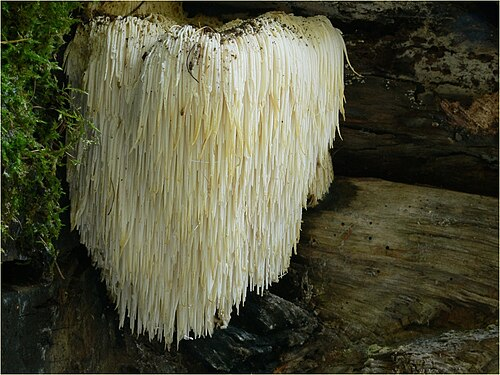 | hericium_erinaceus | Lebrac | CC BY-SA 3.0 | file page |
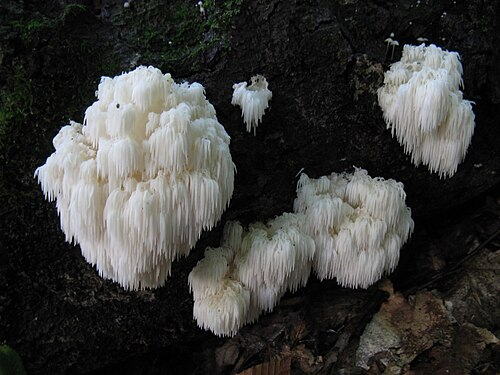 | hericium_americanum | John Carl Jacobs (JCJacobs) | CC BY-SA 3.0 | file page |
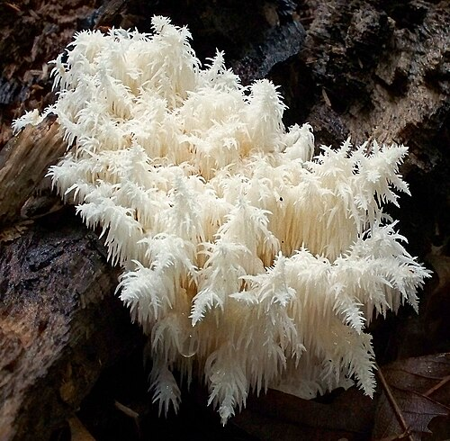 | hericium_coralloides | This image was created by user Patrick Harvey (pg_harvey) at Mushroom Observer , a source for mycological images. You can contact this user here . | CC BY-SA 3.0 | file page |


_Redhead,_Norvell_%26_Moncalvo_260832.jpg){kind=link}


_Fr_628974.jpg){kind=link}


_Pers_58068_crop.jpg){kind=link}